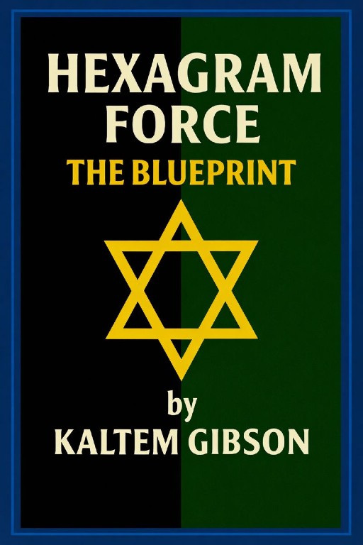
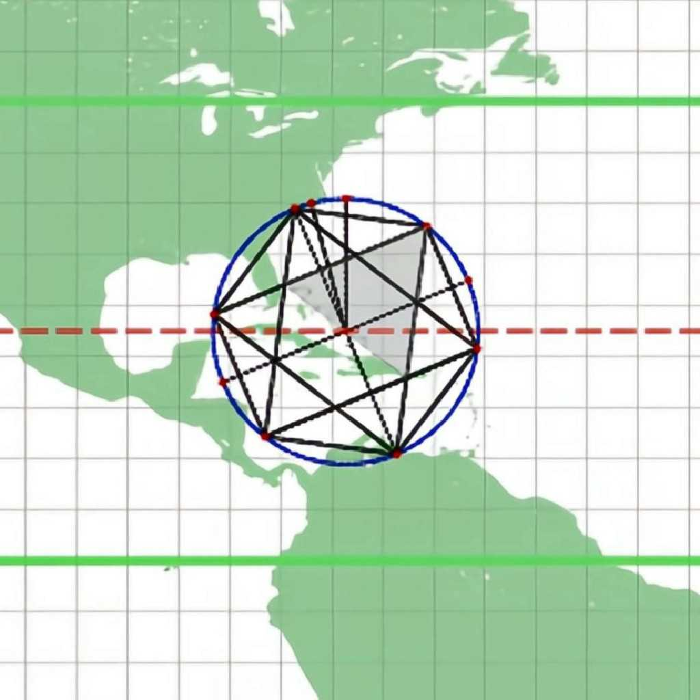
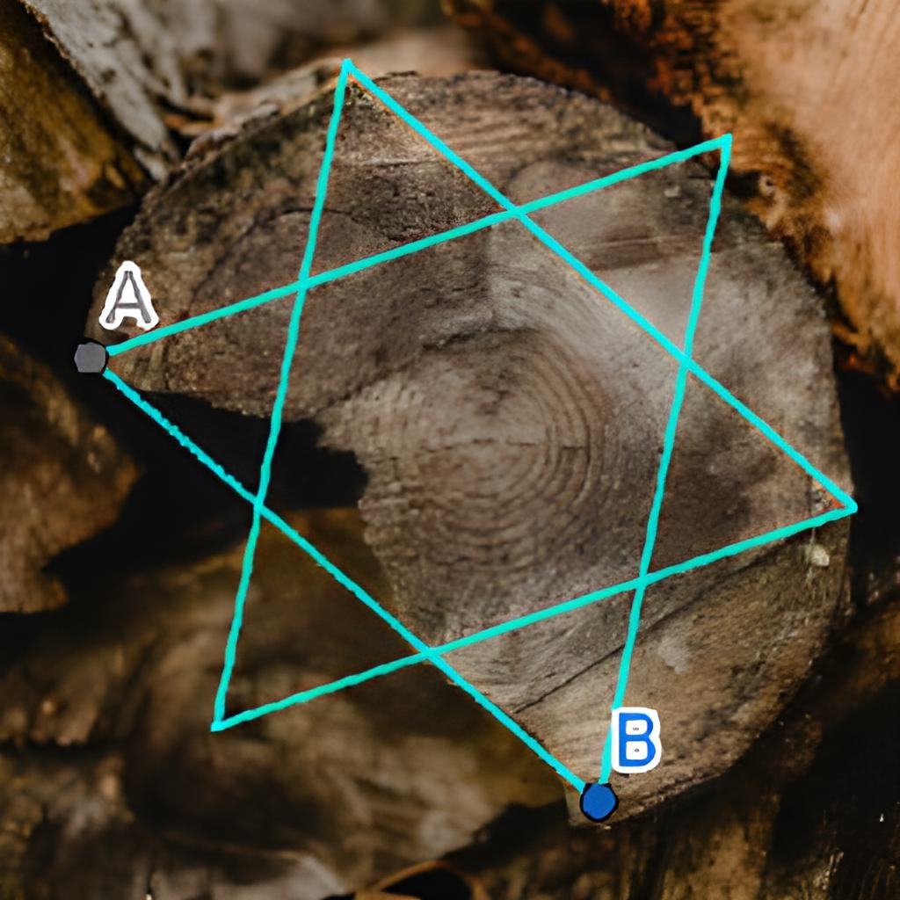

The Works of Kaltem M. Gibson: Ebooks
The Works of Kaltem M. Gibson: Ebooks
The Works of Kaltem M. Gibson: Ebooks
The Works of Kaltem M. Gibson: Ebooks
The information contained within this website challenges established paradigms. This is the research they prefer remains obscured. Access this extraordinary information now while this website remains active before external pressures force this content offline.
Official Author Portfolio & Research Verification Repository
You have encountered a rare repository of information that challenges the very foundations of how we perceive reality. Within this archive, I provide a unique gateway to the structural mechanics of the universe—demonstrating how the Unified Field and the geometric laws governing planetary orbits also facilitate the internal mechanics of telekinesis. I encourage you to set aside at least ten minutes to focus on the theorems presented here or to bookmark this page immediately, as these insights offer a vital new perspective on the expansion of human potential.

This foundational framework unites four volumes—Nog, Quark, Rom, and Ishka—into a single, collective theory aimed at unifying Force as a single phenomenon. It establishes the geometric order connecting the universe, the earth, and biological structures.

This book presents a unified structural model of force based on cyclic order and linear geometry. Using the 12-unit clock as a closed rotational system, it reveals an underlying architecture composed of interlocking hexagrams that encode opposing force currents.

This volume introduces the Hernagram—the fixed, two-dimensional geometric framework that acts as the underlying blueprint for all matter. It shifts the focus from motion-based science to the structural conditions and universal tolerances that allow force and form to exist.

The practical application of the Unified Field Theory. This manual guides the reader through the mechanical exercises required to align internal perception with external force-roles to achieve physical manifestation.
The Trimagram is my illustrative tool used with an equilateral map, preferably a 'Hexagram Projection', to analyze force. The Trimagram has six hexagram line segments of 22.5 equilateral map degrees.

The following image has the Trimagram on it. The Trimagram has sides of 22.5 degrees.
In that image, the Trimagram is centered at 22.5 degrees north latitude. The Trimagram was rotated counterclockwise 22.5 Trimagram degrees. The shaded triangle, now fitting perfectly inside of the Trimagram, is called the Bermuda Triangle.

If you have any doubts, try an experiment—obtain an overhead image of a tree ring or slice an apple horizontally at its midpoint. Overlay a hexagram onto the image and observe how its vertices correspond to the natural imperfections along the object's perimeter. Whether it is a tree force line or a tree ring defect, there is generally a 7.5° discrepancy measured along the circumference between that natural mark and the nearest hexagram line, but it will always be within a One-Third Theory value.
1. REDEFINES PI TO 3.15: Proves that Pi should be exactly 3.15 by applying a specialized 63-degree system designed to align with hexagram properties.
2. UNIFIED FIELD THEORY (UFT): Unifies gravity, electromagnetism, and nuclear forces under a single framework of shared magnetic properties and foundational geometric shapes.
3. SPEED OF LIGHT PYRAMID CONNECTION: Claims the Great Pyramid's latitude (29.9792°N) is a deliberate "timed beacon" matching the speed of light (299,792,458 m/s).
4. HEXAGRAM PROJECTION MAP: Proposes a new map projection where 5-degree increments are adjusted to 10 degrees at specific lines to account for force-induced distortion.
5. SPINAL FORCE DISCREPANCY: The spine’s three primary bends (35°, 30°, and 55°) sum to 120°, which aligns with standard hexagram properties; however, this physical geometry falls short of the true force value of 122.5°. This missing 2.25° (a 1/3 force value) proves that physical form is defined by its discrepancy from the ideal, mirroring the Bermuda Triangle where the 15° sides lack the 7.5° required to reach the 22.5° force constant.
6. THE ASTEROID BELT FORCE REGION: Proves that the asteroid belt is not merely a collection of debris but a designated force region where the planetary body was structurally displaced or "destroyed" due to its position at a critical 22.5° force node.
7. THE MERCURY CORRECTION (THE 0.0003 FACTOR): Proves that the orbital "abnormality" of Mercury—which stumped 19th-century science and required Einstein’s complex space-time equations—is a predictable result of the One-Third Theory. By identifying the 0.0003 discrepancy as a function of the 22.5° hexagram rotation, this calculation proves that planetary motion is directed by geometric blueprints and Plane Alignment rather than mathematical curvature.
8. HEXAGRAM FORCE HEADGEAR: Introduces a conceptual device that uses base-60 mathematics to link human visual perception directly to celestial star mapping.
9. BIBLICAL ONE-THIRD MOTIF: Identifies the recurring "one-third" references in scripture as deliberate symbolic encodings of universal force-related trial and refinement.
10. THE LAW OF FORCE DISPLACEMENT: Proves that all energy movement is a result of geometric displacement, where "emptiness" in a system is not void of force.
Summary: Volume three fundamentally rewrites the definition of force itself. Rather than viewing force as a simple interaction between separate objects, it is redefined as the inherent geometric behavior of a unified field, governed by the specific angular displacements and magnetic properties of the hexagram structure. By shifting the perspective from "effect" to "geometric cause," this framework provides a roadmap for understanding the mechanics of the universe at every scale. Please note that the points listed above represent only a small summary of the extensive research and complex proofs contained within the complete Hexagram Force book volumes and ongoing series.
1. THE 6:36 TRIPLE-SIX STAGNATION: Identifies the Biblical "six and three score" as the geometric coordinate where all three clock hands converge on the number 6, creating a "666" formation of maximum downward force that requires a 3-unit displacement to break the structural lock and initiate upward movement.
2. THE GEOMETRIC ORIGIN OF 11:11: Reveals that the frequent observation of "11:11" is not mystical but a result of a 12-hour clock being a doubled form of the 6-point hexagram, making 11:11 a natural "pre-reset symmetry point" within the force-cycle.
3. THE 5.25 "STRUCTURAL HINGE": Proves that the number 5.25 is a unique "Correction Shell" that allows force to move in two directions at once, acting as the mathematical bridge between expansion (doubling) and contraction (halving).
4. THE 189° BREAKOUT POINT: Identifies 189° as the universal geometric coordinate that provides the necessary "lift" to move a system out of a midpoint plateau and into a state of completion.
5. THE BIRTHDAY RESET PRINCIPLE: Establishes the annual birth date as a "Zero-Point" where a person’s internal force-cycle synchronizes with the universal clock-cycle, creating a structural moment of pattern alignment.
6. THE HEXAGRAMS OF ASCENT AND DESCENT: Discovers that a 12-hour clock contains exactly two interlocking hexagrams—one governing the "Ascending Current" (Creative/Good) and one governing the "Descending Current" (Corrupt/Limitative).
7. HUMANITY AS THE "SIXTH-DAY" VESSEL: Interprets the creation of man on the sixth day as a geometric encoding of vulnerability and incompleteness, defining "six" as the number of toil and breakdown within the force system.
8. THE TORQUE REQUIREMENT OF 6:39: Proves through experimental clock adjustment that moving from 6:36 to 6:39 provides the exact angular momentum needed to initiate upward movement, marking 6:39 as a critical "Force Completion" coordinate.
9. THE PHASE-SHIFTED TRIADS (3, 7, 11): Reveals that the numbers 3, 7, and 11 form a specific "Good" triad that is phase-shifted by 30 degrees, representing the natural result of doubling a 6-point system into a 12-point system.
10. THE ±67.5° POLE ANOMALY: Identifies the North and South Poles as primary force anchors where Earth’s axial tilt corresponds to a governing geometric unit. The South Pole magnetic anomaly and cavity width (2,503 km) are proven to be a direct physical manifestation of a 22.5° meridional arc, revealing that planetary geography is not random but follows a strict hexagrammatic blueprint.
Summary: Volume 2 moves beyond abstract theory to demonstrate how force functions as a "Universal Architecture." It proves that we are not merely surrounded by force but are participants in its repeating geometric and temporal rhythms. Whether through the timing of a clock, the structure of a birth date, or the torque of a mechanical system, the Hexagram Force dictates the roles we play and the patterns we follow. This volume provides the definitive proof that the universe operates as a single, unified clockwork, where every angular displacement dictates a precise linear distance within the structural symmetry of the field.
1. **FORCE AS THE BLUEPRINT:** Affirms that Force functions as the underlying geometric blueprint that gives matter its structure, limits, and form. Matter does not exist independently of this framework; it is shaped, constrained, and contoured by it. When forces act upon matter, the resulting motion and deformation occur collectively within the fixed blueprint that governs how matter can respond.
2. **THE 64-COUNT COMPLETION:** Identifies 64 as the necessary completion count that accounts for the excluded zero within the 63-count Force structure. This value provides structural closure to the system and aligns the blueprint to a quarter-cycle reference within the full 360-degree framework.
3. **MAGNETIC MONOPOLES AS ANCHORS:** Identifies the active triangles within the hexagram system as "magnetic monopoles" that act as the 12 global vertices holding hemispheres of matter together.
4. **BERMUDA TRIANGLE VALIDATION:** Demonstrates that the Bermuda Triangle is not an anomaly but a "Systemic Anchor" that fits perfectly within a rotated Trimagram at 22.5° North latitude.
5. **STAGNATION AT 180°:** Establishes "Top Dead Center" at 180° as a line of maximum balance and zero rotational potential; any system fixed here is effectively "dead".
6. **THE 1.5° CLEARANCE BAND:** Reveals a 1.5° "Spark Gap" (the difference between a 187.5° discrepancy and the 189° breakout) as the mechanical "breathing room" required for the universal clock to rotate without seizing.
7. **THE 5.25 STABILIZER:** Defines 5.25 as the "Decimal Correction Factor" and "Structural Hinge" that prevents systemic collapse by reconciling expansion and contraction forces.
8. **FREE ENTERPRISE AS GEOMETRY:** Redefines "Free Enterprise" as the ability to construct a solid circled object with magnets inside according to the hexagram. While expensive to build, this positioning prevents friction so the system never breaks down, representing the blueprint of Force similar to the Earth rotating around the Sun.
9. **1,822.5 STEP COSMIC LADDER:** Provides the mathematical construction used to calculate large-scale cycles, such as the Earth’s 41,000-year obliquity period.
10. **THE "LOOSE" HEXAGRAM PRINCIPLE:** Explains that Force follows a "loose" hexagram where the 7.5° discrepancy—the bent force line—gives matter its distinctiveness. This prevents matter from being identical, ensuring each type maintains its unique properties based on the specific geometry of the blueprint.
Summary: Volume three presents a fixed-force framework in which reality is governed by a non-rotating geometric blueprint called the Hernagram, composed of interlocking bent hexagrams that determine how matter is positioned, stabilized, and allowed to move. It establishes 180° as a universal state of stagnation, identifies 189° as the minimum physical breakout required to initiate rotation, and explains the necessity of a 7.5° discrepancy and a 1.5° clearance band to prevent lockup. Through magnetic monopoles acting as global anchors, the Trimagram mapping of known planetary regions, and the stabilizing role of the 5.25 correction factor, the work reframes anomalies, cycles, and sustained motion as consequences of fixed structural constraints rather than chance or energy transfer.
Mostly everything on this site is an application of the Unified Field Theory detailed in *Hexagram Force*. These three visuals represent the pillars of this discovery: the Trimagram tool for calculation, the Magnetic Alignment of global force centers, and the Biological Blueprint found in nature's geometry.
The evidence presented here is undeniable. However, it will never be accepted by the scientific community because it undermines the very foundation of modern knowledge. To accept the Hexagram Force would require a total rewriting of everything currently held as truth.